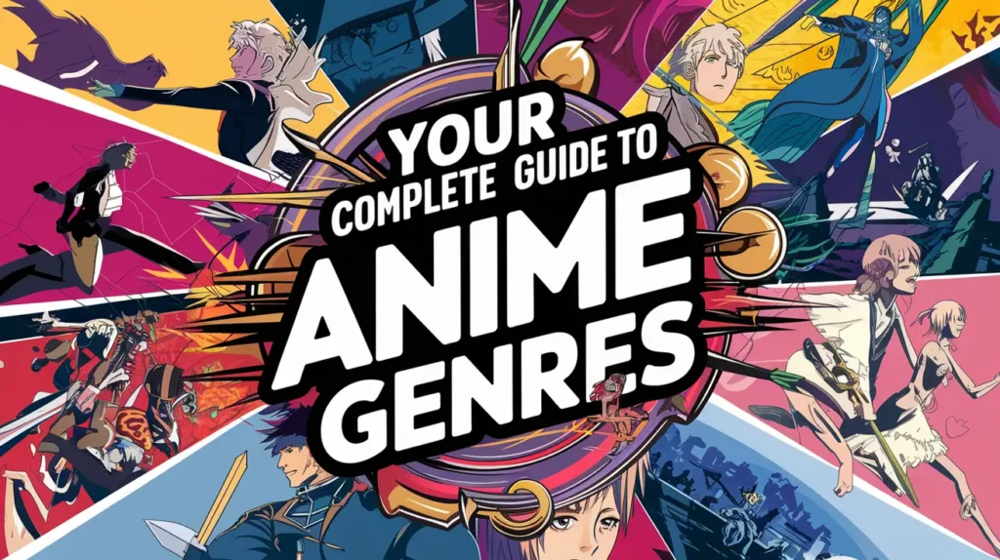
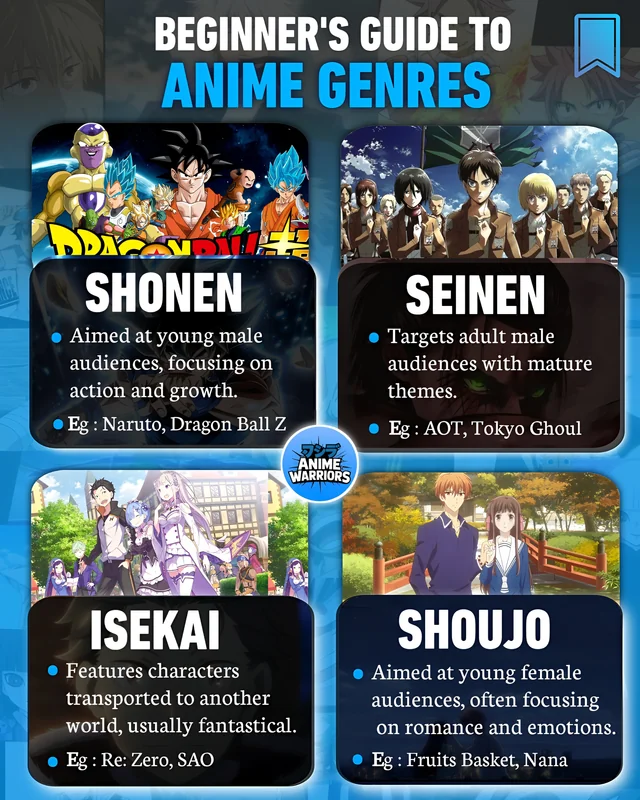
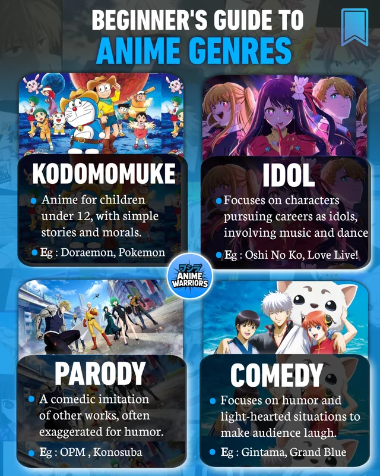
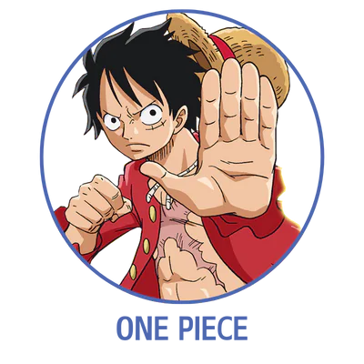
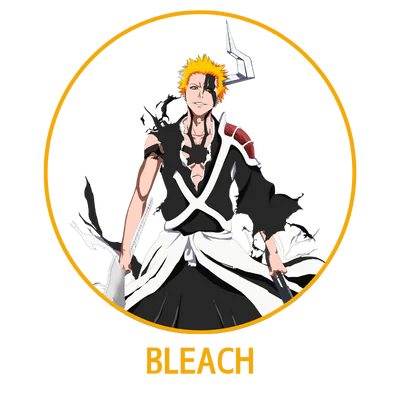

Naruto Uzumaki
Appears in: Naruto, Naruto: Shippuden and Boruto
A loud, energetic ninja from the Hidden Leaf Village. He starts as an outcast with a sealed monster inside him and dreams of becoming the Hokage (the leader of his village).
This is what AniOrbit offers: a growing catalogue of anime titles with summaries, ratings, genres, studios, and character details, so you can find exactly what you're in the mood to watch.

Each entry includes a summary, genre, studio, release year, episode count, and community rating.


Character profiles are one of AniOrbit's core features: background, abilities, relationships, and the series they appear in.
Appears in: Naruto, Naruto: Shippuden and Boruto
A loud, energetic ninja from the Hidden Leaf Village. He starts as an outcast with a sealed monster inside him and dreams of becoming the Hokage (the leader of his village).

Appears in: One Piece
A young pirate who wants to find the legendary treasure and become the King of the Pirates.

Appears in: Bleach
A teenager with bright orange hair who can see ghosts. He gets the powers of a Soul Reaper from Rukia Kuchiki and fights evil spirits called Hollows to protect his friends and family.